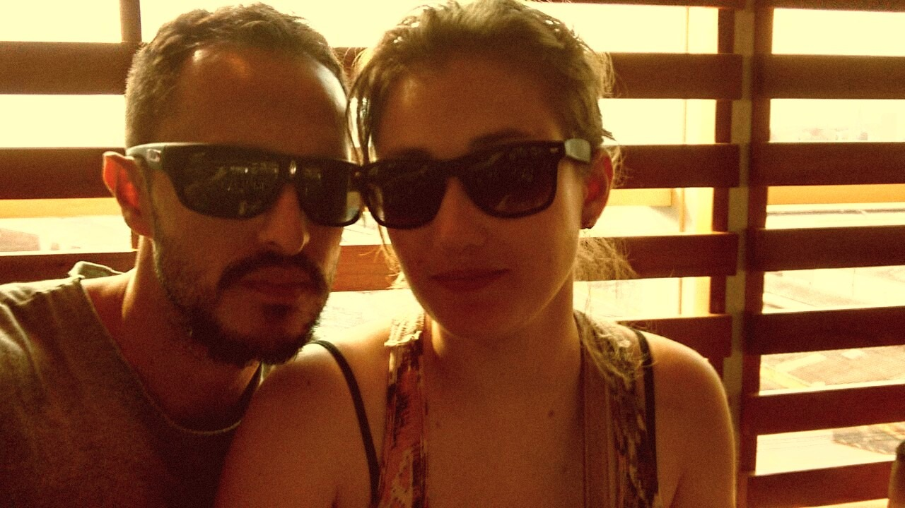

Fotos für Mia
Faust
Nice Transition for any element
Ich liebe Mia
Jede Stunde,
Die Kraft des Jetzt.
Top 5 Reactjs online stores
The Narrative

The Opulence
Lost in perpetual dependency, inhabitants of the Synthetic Era found solace in cryptic simulations, where pain ebbed and cognitive loads momentarily lightened.